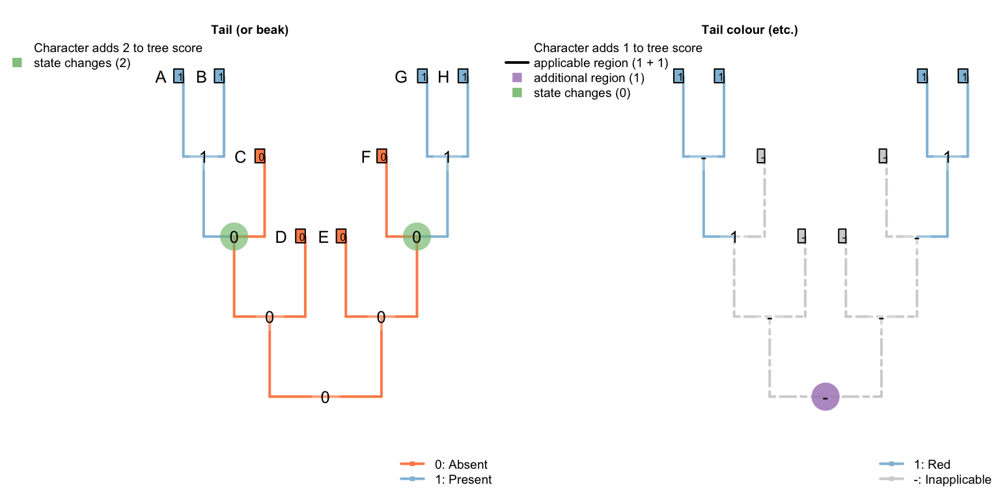
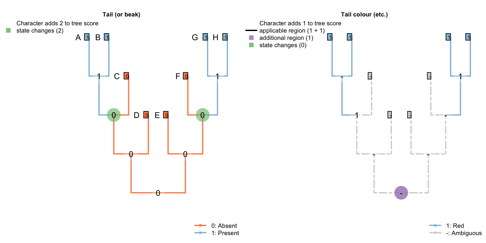
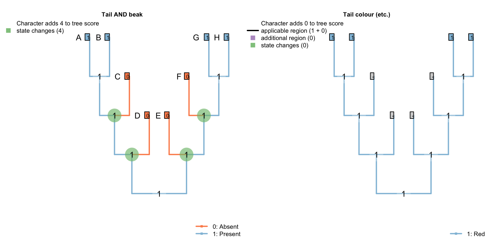
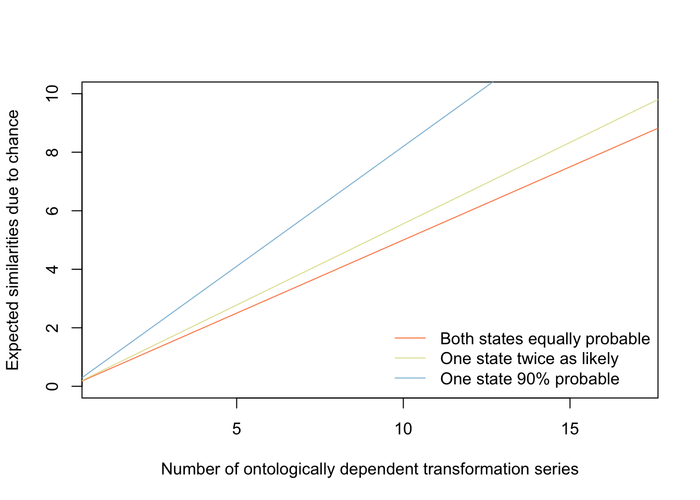

6 Global optimization
6.1 Global optima may be locally suboptimal
Our algorithm only considers reconstructions of principal characters that are parsimonious. Jan De Laet (personal communication) drew our attention to situations where it is possible to reconstruct less global homoplasy by employing a more homoplasious reconstruction of a principal character.
Consider the following minimal example:
| A | B | C | D | E | F | G | H | |
|---|---|---|---|---|---|---|---|---|
| Tail: (0), absent; (1), present. | 1 | 1 | 0 | 0 | 0 | 0 | 1 | 1 |
| Beak: (0), absent; (1), present. | 1 | 1 | 0 | 0 | 0 | 0 | 1 | 1 |
| Tail, colour: (1), red; (2), blue. | 1 | 1 | - | - | - | - | 1 | 1 |
| Tail, length: (1), long; (2), short. | 1 | 1 | - | - | - | - | 1 | 1 |
| Tail, rigidity: (1), rigid; (2), flexible. | 1 | 1 | - | - | - | - | 1 | 1 |
| Tail, curvature: (1), convex; (2), concave. | 1 | 1 | - | - | - | - | 1 | 1 |
| Tail, lustre: (1), glossy; (2), matt. | 1 | 1 | - | - | - | - | 1 | 1 |
On a tree where tail-less taxa separate A and B from F and G, our algorithm reconstructs two separate origins of the tail:

This reconstruction implies seven homoplasies across these characters: one independent gain of the tail, one of the beak, and one independent origin of each ontologically dependent property (redness, longness, rigidity, convexness, glossiness).
An alternative is to reconstruct the tail as ancestrally present, and lost independently in C, D and E.
Considering only the tail, this is an unparsimonious reconstruction: it requires four independent evolutionary events (losses), whereas the former required only two independent evolutionary events (gains). Globally, however, this allows the similarity between ontologically dependent characters to be attributed to common ancestry (i.e. homology), resulting in a lower overall score of six homoplasies (the four in the tail, plus the two in the beak, reconstructed as before, but none in any ontologically dependent character).
6.2 Ontology
Note that the details of this reconstruction rely on the attribution of ontologically dependent characters to specific principal characters. Changing the ontology of the previous matrix (without modifying the scorings) such that two ontologically dependent characters depend on the beak, rather than the tail, results in a different outcome:
| A | B | C | D | E | F | G | H | |
|---|---|---|---|---|---|---|---|---|
| Tail: (0), absent; (1), present. | 1 | 1 | 0 | 0 | 0 | 0 | 1 | 1 |
| Beak: (0), absent; (1), present. | 1 | 1 | 0 | 0 | 0 | 0 | 1 | 1 |
| Tail, colour: (1), red; (2), blue. | 1 | 1 | - | - | - | - | 1 | 1 |
| Tail, length: (1), long; (2), short. | 1 | 1 | - | - | - | - | 1 | 1 |
| Tail, rigidity: (1), rigid; (2), flexible. | 1 | 1 | - | - | - | - | 1 | 1 |
| Beak, curvature: (1), convex; (2), concave. | 1 | 1 | - | - | - | - | 1 | 1 |
| Beak, lustre: (1), glossy; (2), matt. | 1 | 1 | - | - | - | - | 1 | 1 |
Now, neither principal character has enough ontologically dependent characters to compensate for the additional cost of unparsimoniously reconstructing its own distribution. Following the individually parsimonious reconstruction of the tail and beak entails a minimum of seven homoplasies: one additional gain of each of the beak and the tail, and an independent origin of redness, longness, rigidity, curvature and lustre:

On the other hand, reconstructing a beak and a tail as present in the common ancestor requires four independent losses in each character – a total of eight homoplasies, which does not outweigh the benefit obtained by reconstructing the ontologically dependent characters as homologous:

6.3 Similarity due to chance
It is important to recall that two features that evolve independently are expected to share a number of similarities due to chance. A curved beak, for example, must be either convex or concave, and must be either glossy or matt. If curved beaks evolved twice, then there is at least a \(\frac{1}{4}\) chance that the two innovations will have the same lustre and direction of curvature. (In practice, fitness, developmental constraints and contingency are likely to make one curvature or lustre more likely, increasing the likelihood of a chance similarity.)
On this basis, if a character has a number of ontologically dependent binary characters, then mathematically one must expect two independent origins of the parent character to bear a number of similarities by chance:

In the conservative case that binary attributes are equally probable, a character with 12 ontologically dependent binary characters is expected to share, by chance, six attributes with any taxon that independently gained that character. Because a parsimony approach does not acknowledge this expectation, an attempt to maximise global homology places undue weight on similarities that could potentially be attributed to chance.
Whether a character has 6, 12 or 120 ontologically dependent characters, if six of these characters bear the same state, then global homology will be maximised by reconstructing seven independent losses, in order to attribute these similarities to common ancestry – even though in the latter cases the similarities are likely due to chance, and the additional losses of the character implied by maximising global homoplasy are unlikely to represent evolutionary history.
6.4 Implied weighting
This matter is exaggerated further in the context of implied weighting (Goloboff, 1993, 2014).
Consider the case of a pollinator’s tongue.
Tongue: Curvature: Straight / curved
Tongue: Curvature: Direction: Up / down
Tongue: Curvature: Uniformity: Uniform / uneven
Let’s assume that two taxa within an analysis have tongues that both curve uniformly up; other tongue-bearing taxa have straight tongues. In the absence of prior knowledge concerning the likely nature of tongue coiling, the probability that two tongues that evolved independently would both curve uniformly upwards is ¼. As such, the similarities between the coiling do not constitute strong evidence that coiling evolved once; two origins is less parsimonious, but not by much.
Let’s consider now some trees where the two curled-tongued taxa are separated by a number of straight-tongued taxa:

Each of these trees can be interpreted in one of two ways: there may have been two independent evolutionary events that gave rise to curved tongues (which both happened to curve uniformly upwards, by a small but unremarkable coincidence), or there was one evolutionary event that gave rise to a curved tongue, and 0, 1, 2, 3, 4, or 5 additional evolutionary events whereby a curved tongue was straightened.
Let’s consider the extra steps entailed for each tree under these two scenarios:
| Intervening taxa | 0 | 1 | 2 | 3 | 4 | 5 |
|---|---|---|---|---|---|---|
| Curvature | 0 | 1 | 2 | 3 | 4 | 5 |
| Direction | 0 | 0 | 0 | 0 | 0 | 0 |
| Uniformity | 0 | 0 | 0 | 0 | 0 | 0 |
| Total | 0 | 1 | 2 | 3 | 4 | 5 |
| Intervening taxa | 0 | 1 | 2 | 3 | 4 | 5 |
|---|---|---|---|---|---|---|
| Curvature | 1 | 1 | 1 | 1 | 1 | 1 |
| Direction | 1 | 1 | 1 | 1 | 1 | 1 |
| Uniformity | 1 | 1 | 1 | 1 | 1 | 1 |
| Total | 3 | 3 | 3 | 3 | 3 | 3 |
On this view, if there are fewer than three intervening taxa, then it is more homologous to reconstruct a single origin and zero, one or two losses; if there are more than three intervening taxa, it is more homologous to reconstruct two separate origins of curvature.
However, under implied weights (Goloboff, 1993), each additional homoplasy in a character is afforded less cost than the one before, according to a ‘goodness of fit’ function \(\frac{e}{e + k}\). The preferable reconstruction now is the one that minimises total cost, which will depend on the value of k selected. Under any value of of k, it takes at least four intervening taxa for two origins of the tail to be preferable to multiple losses:
6.4.1 k = 10
| Intervening taxa | 0 | 1 | 2 | 3 | 4 | 5 |
|---|---|---|---|---|---|---|
| Curvature | 0 | 0.0909 | 0.167 | 0.231 | 0.286 | 0.333 |
| Direction | 0 | 0 | 0 | 0 | 0 | 0 |
| Uniformity | 0 | 0 | 0 | 0 | 0 | 0 |
| Total | 0 | 0.0909 | 0.167 | 0.231 | 0.286 | 0.333 |
| Intervening taxa | 0 | 1 | 2 | 3 | 4 | 5 |
|---|---|---|---|---|---|---|
| Curvature | 0.0909 | 0.0909 | 0.0909 | 0.0909 | 0.0909 | 0.0909 |
| Direction | 0.0909 | 0.0909 | 0.0909 | 0.0909 | 0.0909 | 0.0909 |
| Uniformity | 0.0909 | 0.0909 | 0.0909 | 0.0909 | 0.0909 | 0.0909 |
| Total | 0.273 | 0.273 | 0.273 | 0.273 | 0.273 | 0.273 |
And at smaller values of k, progressively more losses of the tail are preferable to a single coincidence:
6.4.2 k = 5
| Intervening taxa | 0 | 1 | 2 | 3 | 4 | 5 |
|---|---|---|---|---|---|---|
| Curvature | 0 | 0.167 | 0.286 | 0.375 | 0.444 | 0.5 |
| Direction | 0 | 0 | 0 | 0 | 0 | 0 |
| Uniformity | 0 | 0 | 0 | 0 | 0 | 0 |
| Total | 0 | 0.167 | 0.286 | 0.375 | 0.444 | 0.5 |
| Intervening taxa | 0 | 1 | 2 | 3 | 4 | 5 |
|---|---|---|---|---|---|---|
| Curvature | 0.167 | 0.167 | 0.167 | 0.167 | 0.167 | 0.167 |
| Direction | 0.167 | 0.167 | 0.167 | 0.167 | 0.167 | 0.167 |
| Uniformity | 0.167 | 0.167 | 0.167 | 0.167 | 0.167 | 0.167 |
| Total | 0.5 | 0.5 | 0.5 | 0.5 | 0.5 | 0.5 |
6.4.3 k = 3
| Intervening taxa | 0 | 1 | 2 | 3 | 4 | 5 | 6 | 7 | 8 | 9 | 10 |
|---|---|---|---|---|---|---|---|---|---|---|---|
| Curvature | 0 | 0.25 | 0.4 | 0.5 | 0.571 | 0.625 | 0.667 | 0.7 | 0.727 | 0.75 | 0.769 |
| Direction | 0 | 0 | 0 | 0 | 0 | 0 | 0 | 0 | 0 | 0 | 0 |
| Uniformity | 0 | 0 | 0 | 0 | 0 | 0 | 0 | 0 | 0 | 0 | 0 |
| Total | 0 | 0.25 | 0.4 | 0.5 | 0.571 | 0.625 | 0.667 | 0.7 | 0.727 | 0.75 | 0.769 |
| Intervening taxa | 0 | 1 | 2 | 3 | 4 | 5 | 6 | 7 | 8 | 9 | 10 |
|---|---|---|---|---|---|---|---|---|---|---|---|
| Curvature | 0.25 | 0.25 | 0.25 | 0.25 | 0.25 | 0.25 | 0.25 | 0.25 | 0.25 | 0.25 | 0.25 |
| Direction | 0.25 | 0.25 | 0.25 | 0.25 | 0.25 | 0.25 | 0.25 | 0.25 | 0.25 | 0.25 | 0.25 |
| Uniformity | 0.25 | 0.25 | 0.25 | 0.25 | 0.25 | 0.25 | 0.25 | 0.25 | 0.25 | 0.25 | 0.25 |
| Total | 0.75 | 0.75 | 0.75 | 0.75 | 0.75 | 0.75 | 0.75 | 0.75 | 0.75 | 0.75 | 0.75 |
6.5 Generalization
In general, if there are even a small number of similarities between ontologically dependent characters, then the maximal-fit reconstruction will infer a very high number of secondary losses rather than attributing a small number of similarities to convergence. This is especially true at small to medium values of k.
References
Goloboff, P. A. (1993). Estimating character weights during tree search. Cladistics, 9(1), 83–91. doi:10.1111/j.1096-0031.1993.tb00209.x
Goloboff, P. A. (2014). Extended implied weighting. Cladistics, 30(3), 260–272. doi:10.1111/cla.12047